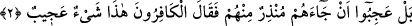
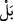

ve lütufları bol olan demektir.
Kişinin şerefli olması yanında fiilleri de güzel olursa işte ona mecîd denir. Yine
mâcid de denir. Bunlardan mecîd daha fazla mübalağaya delalet eder. Buradaki yeminin
cevâbı hazfedilmiştir. Takdîri şöyledir: “Ey Muhammed! Sen mutlaka uyarıcı bir
peygambersin.” Yani “Allah’ın azabıyla korkutursun.”
2. Aralarından bir uyarıcının gelmesine şaştılar da, kâfirler şöyle dediler: «Bu
şaşılacak bir şeydir.»
Melek cinsinden değil de kendi cinslerinden, “aralarından bir uyarıcının
gelmesine” Kureyş’in firavunları ve inatçıları “şaştılar.”
Bu ifade, daha önce hazfedilen cevabın haber verdiği durumun değil aksinin olduğunu
belirtmek için kullanılmıştır. Yani, onlar Rasûlullah (s.a.) Efendimiz’in peygamberliği
husûsunda şüpheye düştüler, hatta şüphe ve tereddüde düşmekle de kalmadılar bilakis
inkâr ettiler. O kadar ki, bunu olmayacak bir iş saydılar.
Âlimlerden birisi şöyle demiştir: Sûrenin başındaki yeminin cevabı mahzuftur. Bunun
delili de âyette geçen __WORD__ ifadesidir. Çünkü bu ifade, kendinden önceki kısmı nefyetmek
içindir. Burada mahzûf bir ifadenin nefyine delâlet eder. Takdiri şöyledir: “Kendisiyle
dünyanızın kaim olduğu Kâf dağına ve kendisiyle dîninizin kaim olduğu Kur’ân’a yemin
olsun ki seni delil ve bilgi ile yalanlamıyorlar. Bilakis garip karşılıyorlar… “Garip
karşılamak, şaşırmak” diye tercüme edilen __WORD__ ifadesi, kişinin bir şeyin normal
hâdiseler dışında olduğunu düşünmesidir.
“Kâfirler dediler ki: Bu tuhaf bir şeydir!” Bu ifade, onların şaşkınlıklarını
açıklamakta, aynı zamanda bu şaşkınlığın, onların inkârlarını da içerdiğini beyan
etmektedir. Bu, Efendimiz (s.a.)’in uyarı ve ikazlarını daha ziyade Kur’an’la yaptığını
göstermektedir. Hâsılı onlar şöyle demiş olmaktadırlar: “Kavmimiz içinde risâletle
vazifeli uyarıcının biz değil de o olması ve uyardığı şeyin de öldükten sonra diriliş
olması benzerlerinden çok farklı, mutad dışı bir hâdisedir.” Bu hal, onların aşırı
bilgisizliklerinden kaynaklanmaktadır. Çünkü onlar bir taraftan peygamberin kendileri
gibi bir beşer olmasına çok şaşırıyorlardı. Oysa bizzat kendileri taşları ilah kabul
ediyor ve yeniden diriltilmeyi de inkâr ediyorlardı. Hâlbuki şu kâinatta, gece ve
gündüzün gidip tekrar geri gelmesi, yeryüzünün ölümünden sonra baharda yeniden
diriltilmesi ve bitkilerin, ağaçların, meyvelerin yeşermesi gibi pek çok şey yeniden
diriltilmeye birer misaldir.
“Aralarından bir uyarıcı gelmesine şaştılar” ifâdesinde kasd olunan kimseler,
kâfirler olmasına rağmen bunlar açıkça zikredilmemişlerdir. Çünkü böyle bir sözü
ancak kâfirler söyler. İstikamete aykırı bir şey söyleniyorsa da bundan yine doğrudan